Вырубка в полиграфии: от замысла к готовому изделию
Вырубка в полиграфии – это процесс придания листу бумаги, картона или другого материала определенной формы с помощью штампа. Этот метод позволяет создавать изделия со сложными контурами, отверстиями, просечками и другими декоративными элементами, которые невозможно получить с помощью обычной резки. Вырубка широко применяется в производстве упаковки, этикеток, открыток, POS-материалов и других полиграфических изделий.
Конструкция и материалы
Вырубная форма представляет собой основу (обычно из дерева или металла), в которую вставлены острые режущие ножи. Ножи располагаются по контуру желаемой формы и надежно фиксируются. Для сложных контуров используются биговочные ножи (для сгибания материала) и перфорационные ножи (для создания линий отрыва).
Процесс создания
Процесс вырубки начинается с разработки макета изделия и создания векторного контура, который будет соответствовать форме вырубной формы. Этот контур передается изготовителю штампа, который использует его для создания физической формы. Важно тщательно продумать конструкцию изделия на этапе проектирования, чтобы избежать проблем с вырубкой, таких как замятие материала, неровные края или смещение изображения.
Применение и преимущества
Вырубные формы позволяют создавать упаковку сложной формы, коробки, этикетки, открытки, рекламные материалы и многое другое. Их применение обеспечивает высокую точность, скорость и повторяемость резки, что особенно важно при больших тиражах. Они также позволяют использовать широкий спектр материалов: бумагу, картон, пластик, ткани и т.д.
Вырубные формы используются на различных типах оборудования, включая тигельные прессы и автоматические вырубные машины. Тигельные прессы – это классическое оборудование для вырубки, которое отличается простотой конструкции и надежностью. Однако тигельные прессы имеют низкую производительность и требуют ручной подачи материала.
Автоматические вырубные машины – это современное высокопроизводительное оборудование, которое позволяет осуществлять вырубку в автоматическом режиме. Автоматические машины оснащены системами автоматической подачи материала, выравнивания, удаления отходов и подсчета готовых изделий.

В типографии запущен новый «Автоматический пресс для плоской высечки MHK-1050»
Данный пресс используется, главным образом, для высокопрецизионной высечки и конгрева картона 0,1–2 мм , полиэтилена 0,2–1,5 мм, а также высечки гофрированной бумаги менее 4 мм.
Это означает, что сейчас мы можем предложить заказчику «КОНГРЕВ» уже в большем объеме-промышленном, для небольших тиражей мы используем тигель для тиснения и конгрева. Автоматический пресс для плоской высечки MHK-1050 отличается высокойскоростью работы, высокой степенью безопасности и простотой в эксплуатации.
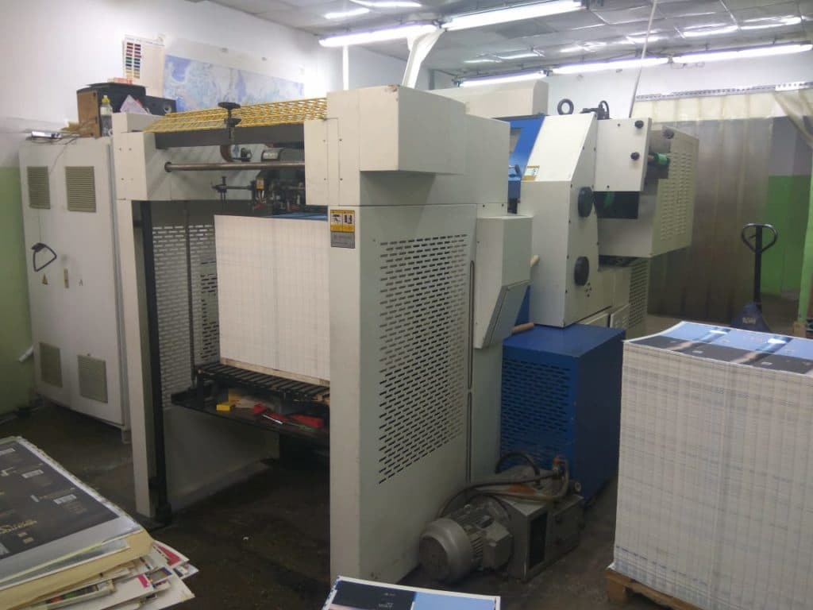
YAWA TYM 790 Автоматический пресс для высечки- используется в типографии для вырубки А2, и В2 форматов
Технические характеристики:
| Формат листа | от 310х210 мм до 790х560 мм; |
| Максимальный формат вырубки | 760×520; |
| Плотность листа | от 90 до 2000 г/м кв.; |
| Толщина листа | до 1,5 мм; |
| Макс. скорость | 5500 листов в час(высечка) и 5000 л/час (тиснение); |
| Максимальное усилие вырубки | 120 т |
| Максимальная длина ножей | Высота — 23.8 мм. Длина зависит от материала. |
| Система подачи листов | Автоматическая, каскадная; |
Выбор оборудования и типа вырубной формы зависит от тиража, сложности контура изделия и требований к качеству. В любом случае, вырубка – это важный и незаменимый процесс в современной полиграфии, который позволяет создавать уникальные и привлекательные изделия.
После изготовления вырубная форма устанавливается на выбранное оборудование. Настройка оборудования включает в себя регулировку давления, скорости и положения формы относительно материала. Важно обеспечить правильную настройку, чтобы получить чистый и точный рез без деформации материала. Перед началом тиража рекомендуется провести пробную вырубку нескольких экземпляров, чтобы убедиться в правильности настроек и качестве реза.
Тигельные прессы — наиболее распространенные за счет свой невысокой стоимости и функциональности: они позволяют выполнять сразу множество операций, в том числе перфорацию, тиснение фольгой и т.д. Имеют небольшую скорость работы, чаще всего применяются для вырубки упаковки крупного формата.
В типографии большой парк оборудования: 4 тигельных пресса:
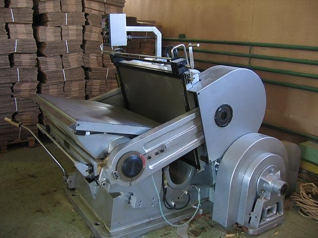
Тигельный пресс ML 1100 применяется в отделочных процессах для перфорации, декорирования, бигования и высекания кроя заготовок коробок из бумаги, картона, гофрокартона, микрогофрокартона, кожи, пластмассы и других материалов.
Размер штанц-формы 780 х 1100 мм
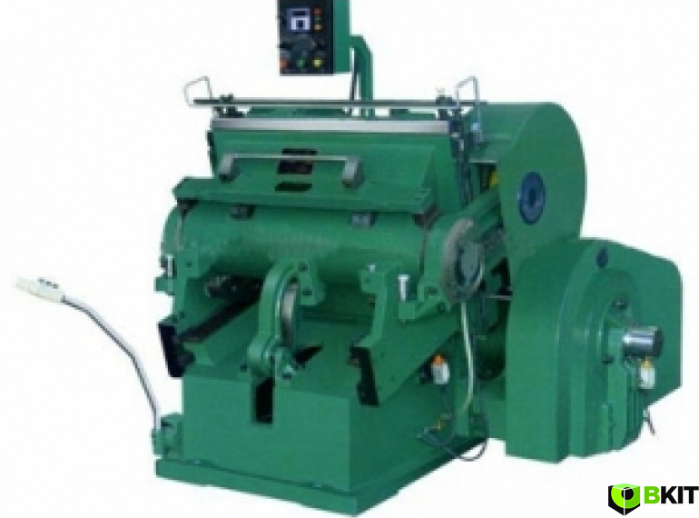
Тигельный высекальный пресс PYQ401А используют на производстве в отделочных работах для декорирования, бигования, перфорации, высекания заготовок коробки из гофрокартона, бумаги, пластика и кожи. Формат вырубки 650*480мм
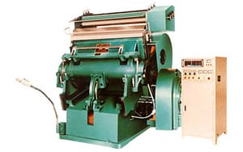
Тигельный пресс серии PYQ предназначены для высечки по контуру, внутренней высечки, перфорации и биговки, для надсечки на самых разнообразных материалах: одно- и многослойной бумаге, плотном картоне, пластике и коже. Прессы горячего тиснения серии TYMB 650 А , кроме этого, могут производить еще и тиснение фольгой.
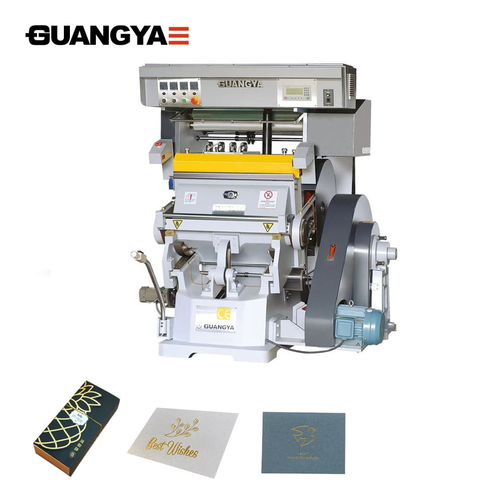
Это новое поколение машин работает с высокой точностью, имеет возможность тиснения всеми видами металлизированной фольги, а также конгревного и блинтового тиснения художественных изображений, торговых знаков, тиснения на переплетных крышках, поздравительных открытках и других видах высококачественной отделочной и печатной продукции. Благодаря надежному построению данные прессы позволяют работать на различных материалах, таких как бумага, гофрированный картон, пластик, кожа.
Прессы оснащены новейшей системой компьютерного контроля, регулировки нагрева отдельных областей плиты и данные по скорости промотки выведены на удобную приборную панель прямо перед оператором.
Сегодня высечка – это универсальный производственный процесс, в котором используются специализированные машины и инструменты для преобразования исходных материалов в нестандартные формы и размеры.
Вырубной штамп (штанцформа) - это форма для резки (можно представить как процесс приготовления печенья), которая вдавливается в материал - картон, чтобы сформировать желаемую форму упаковки.
Коробки и упаковку часто производятся с использованием специальной штамповой оснастки на высекальном прессе.
Этот производственный процесс не только ускоряет производство, но и гарантирует устойчивое качество продукта.
Таким образом, практическая ценность процесса высечки при помощи штанцформ заключается в возможности массового производства нестандартной упаковки.
Сложную индивидуальную упаковку производить проще, быстрее и экономичнее в больших масштабах. С помощью штанцформ на коробках можно создать практически любую форму или перфорацию, окошко или замочек.
Первоначально предназначенная для массового производства упаковки, сегодня высечка превратилась в универсальный производственный процесс.
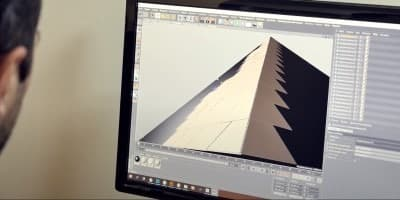
Развитие технологий изготовления вырубных штампов обеспечивает наиболее эффективную и точную конструкцию упаковки, коробок. Как правило, схема упаковки создается с помощью автоматизированного проектирования (САПР).
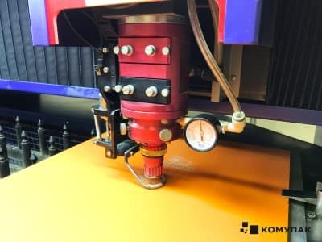
Оцифрованный чертеж (эскиз) переносится на березовую фанеру высокого качества.
Далее при помощи современного лазерного оборудования производится фигурная резка будущей штанцформы.
Внедрение лазеров в этот процесс обеспечило ощутимый рост точности переноса чертежа на фанеру.
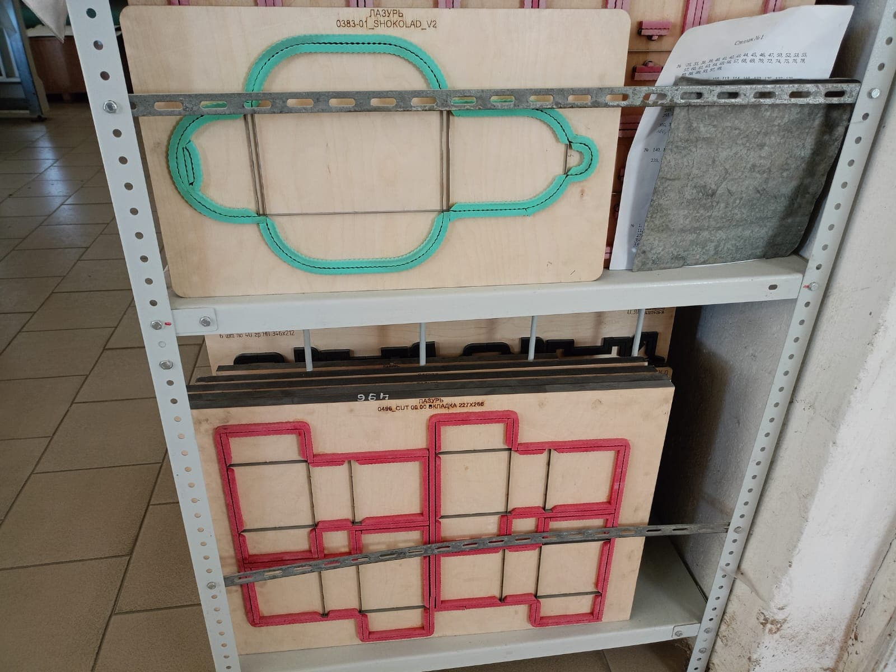
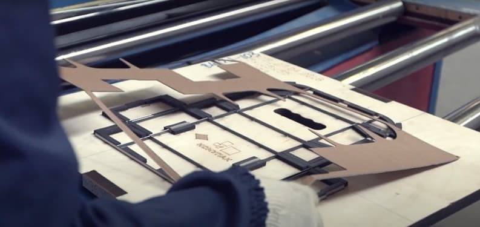
Штанц-форма представляет собой фанерную основу, на которой закреплены острые фигурные ножи из стали. Вырубный штамп полностью повторяет все контуры и элементы будущего изделия в развернутом состоянии. В зависимости от используемого оборудования различают ротационные, плоские штанцевальные формы и штанцформы для тигельного пресса.
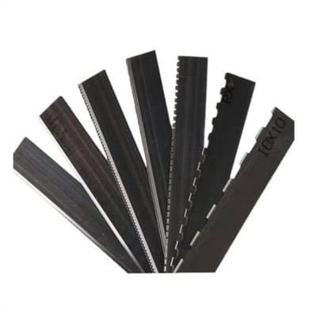
В штампе для резки используются металлические полосы, называемые стальными линейками.
Режущей линейке придают форму с помощью гибочного станка, который сгибает, разрезает и надрезает сталь до необходимой формы.
В процессе высечки можно использовать различные методы резки. У каждого метода есть функциональные отличия в зависимости от сложности упаковки.
Применение вырубных форм
Вырубка может сочетаться с другими полиграфическими процессами, такими как печать, ламинирование, тиснение и конгрев. Это позволяет создавать многослойные и сложные изделия с дополнительными визуальными и тактильными эффектами. Например, вырубка может использоваться для создания окошек в упаковке, через которые виден продукт, или для придания объемности изображению на открытке.
Современные технологии позволяют создавать вырубные формы с высокой точностью и детализацией, что открывает широкие возможности для дизайна и производства полиграфической продукции. Лазерная резка, 3D-печать и другие инновационные методы позволяют изготавливать формы сложной геометрии и с мелкими деталями, которые ранее были недоступны. Это позволяет дизайнерам воплощать в жизнь самые смелые и оригинальные идеи, а производителям – создавать уникальные и конкурентоспособные продукты.
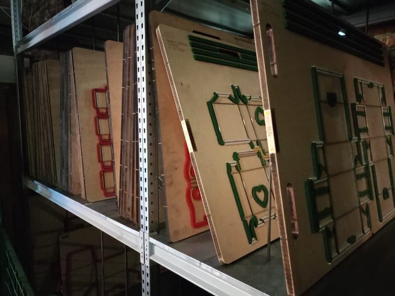
В типографии накоплен обширный арсенал вырубных форм, насчитывающий более 600 экземпляров различных конфигураций. Этот внушительный фонд предоставляет дизайнерам и производителям упаковки исключительную гибкость в создании уникальных и запоминающихся форм продукции. От простых геометрических фигур до сложных контурных элементов, возможности практически безграничны.
Наличие такого разнообразия вырубных форм позволяет типографии оперативно реагировать на самые нестандартные запросы клиентов, обеспечивая высокую скорость выполнения заказов и минимизируя затраты на разработку новых форм. Это особенно важно в условиях современного рынка, где скорость и индивидуализация играют ключевую роль в успехе продукта.
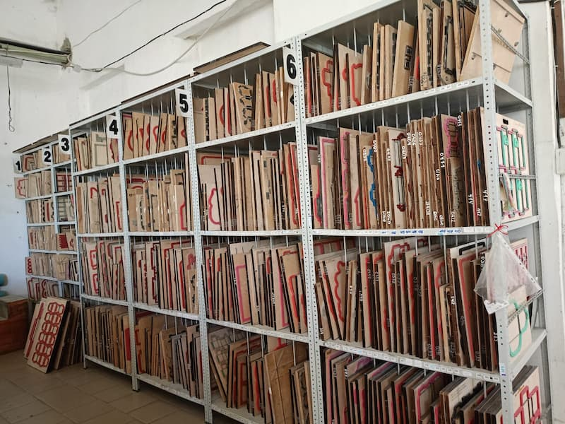
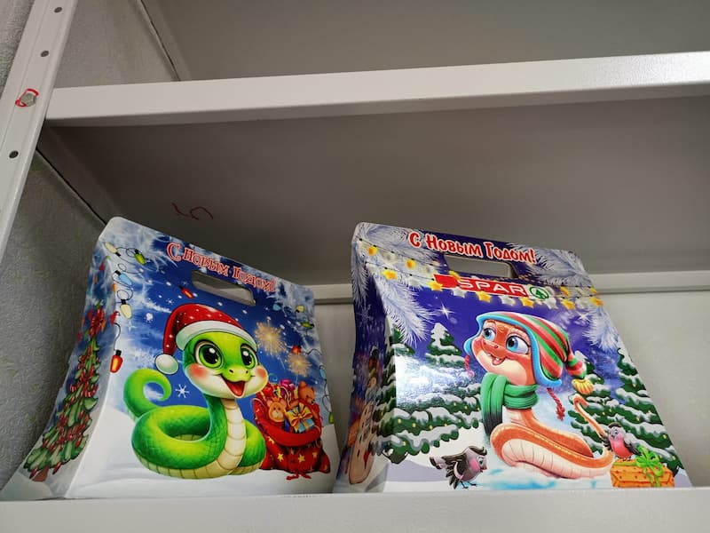